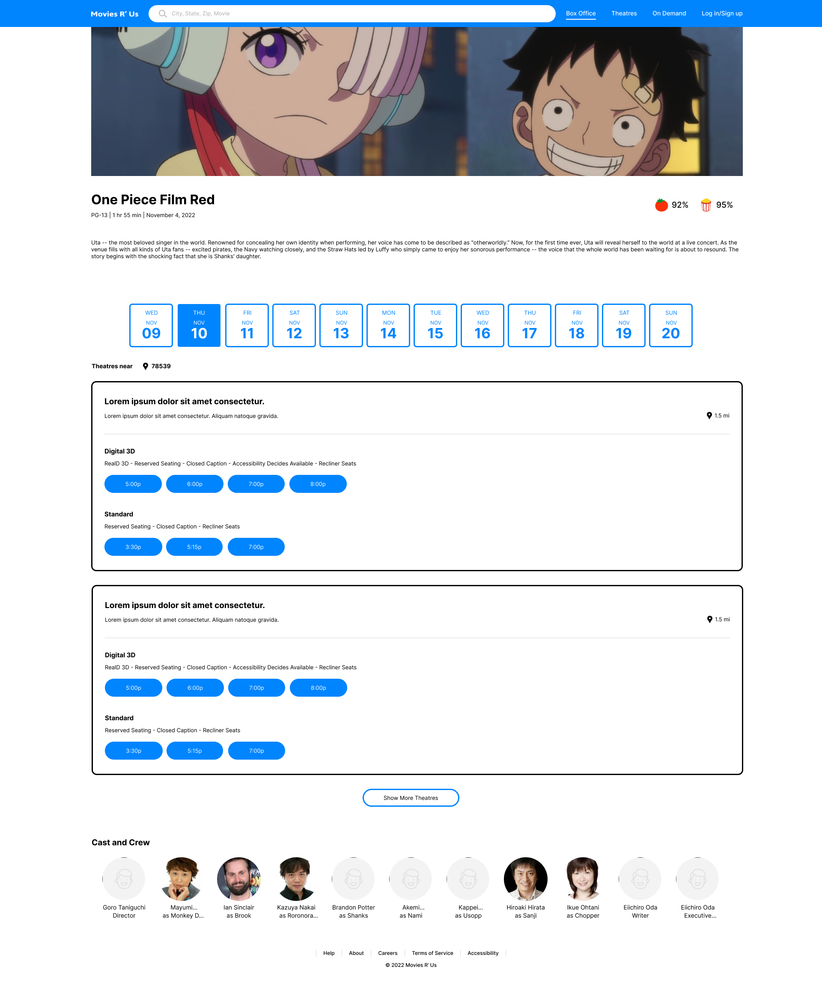
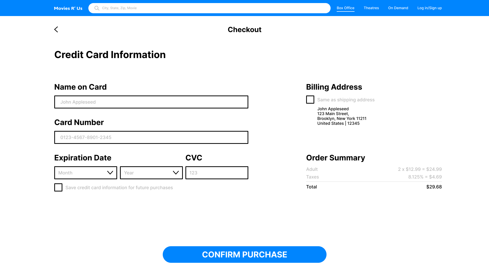
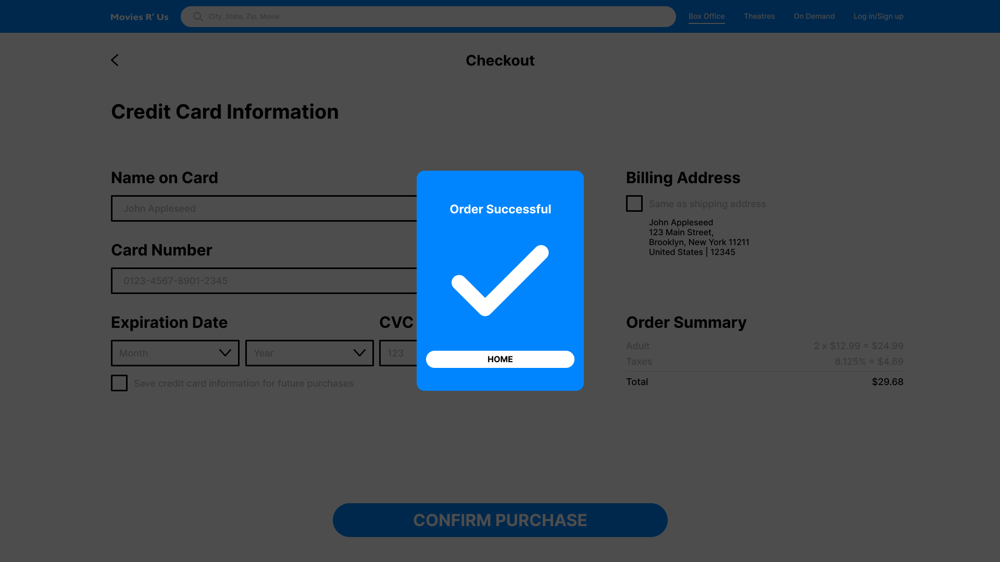
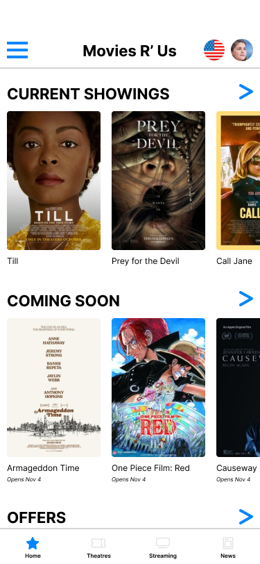
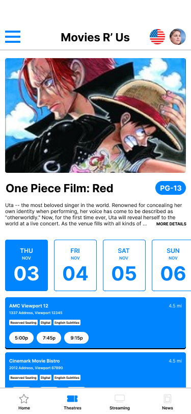
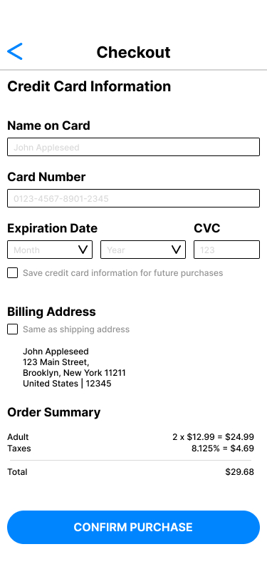
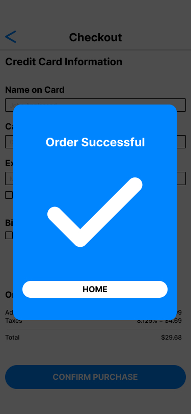

project goal
target audience
key challenges or constraints
research study details

initial design concepts
sketches or wireframes
user testing results
mockups or high-difelity prototypes
I wanted a clean and visually appealing layout when designing the prototype for the project.



This includes a mobile-friendly layout since people use their phones a lot more than their computers.




In conclusion, what was learned from his design process is that each user case is unique, which brings a great challenge to making a program that suits all kinds of people.